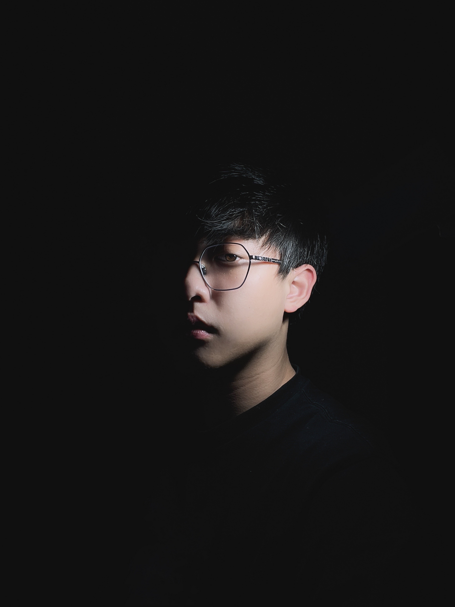

My name is Dong Xia, I design stuff.
...Nice to meet you!
I was born and rised in Hangzhou, China. I am a digital product designer currently living in New York City and a graduate student studying Communication Design at Parsons School of Design. From a young age, my passion in art and aesthetics led me to the path of a designer. My area of expertise is in UI design, user research and visual communication.
Also, I enjoy photography and art exhibitions.
Me
Education
Parsons School of Design MPS in Communication Design
Stony Brook University BA in Environmental Design, Policy, and Planning
Experience
The 19th Asian Games Hangzhou 2022 Organizing Committee
NEONE Advertising Company
Hangzhou Culture Radio Television Group
Hangzhou Daily
Mail：xiadong1997@hotmail.com